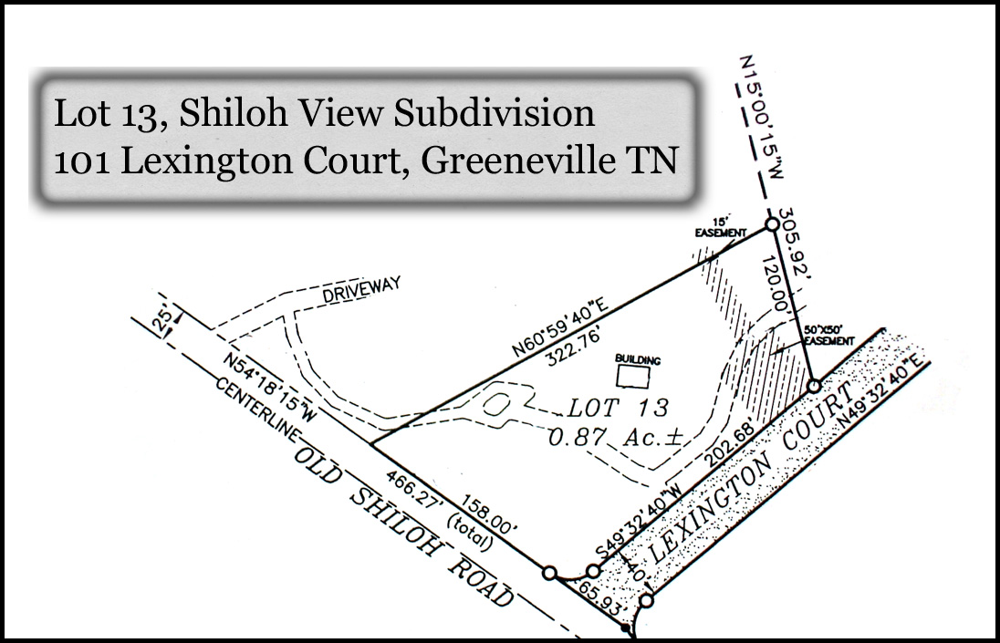
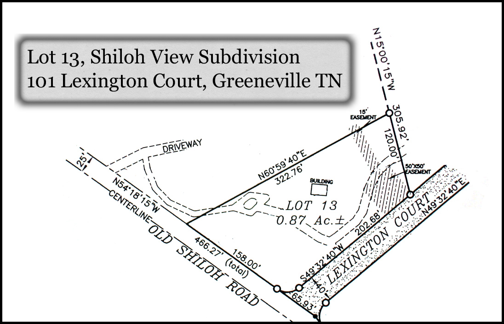

About The Property
- Corner lot – 158′ frontage on Old Shiloh Road, 203′ frontage on Lexington Ct.
- Almost an Acre (0.87 Ac.)
- In the Town of Greeneville, TN, with City Schools and City Services
- Lot is level, fenced on the street frontage, and with basic landscaping
- Access now off short cul-de-sac (Lexington Ct.) with little traffic, or can be changed to Old Shiloh Rd. if desired
- Driveway and paved parking in place
- Underground utilities
- Numerous mature trees around the perimeter
- Convenient location to shopping, Tusculum College, Greeneville, and easy access to Johnson City
- Close access to Hospital and Medical
- An exact replica of Andrew Johnson's original Tailor Shop building is on the lot
About The Andrew Johnson Tailor Shop Replica
This building was constructed in 1999 from plans of the restored tailor shop building at the Andrew Johnson visitor center in Greeneville. The building is 14′ × 21′ with a front and rear door, two windows in front, and one in rear. There is a wood burning fire place for heat, but no water or electricity. There are hand‐made windows with float glass, solid pine doors, hand‐forged iron hardware—all based on the original tailor shop construction.
I used this shop for twelve years to build traditional 18th century American Windsor Chairs using the same designs, materials, tools, and construction methods of these period pieces.
Pictures


 
